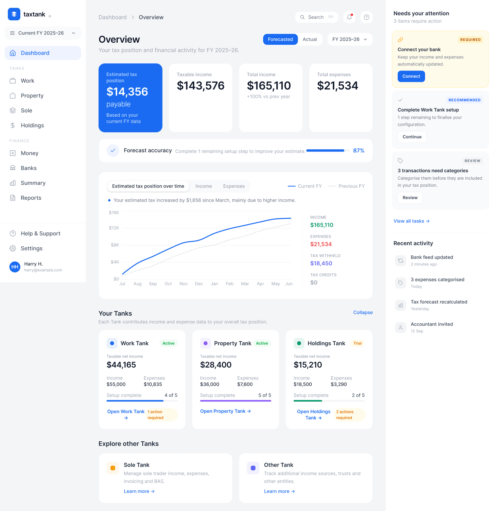
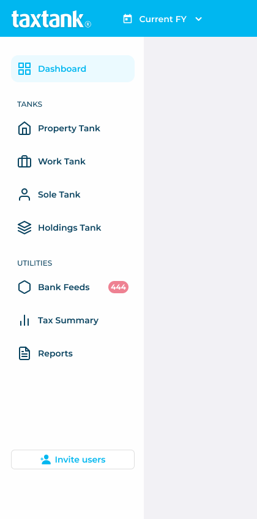
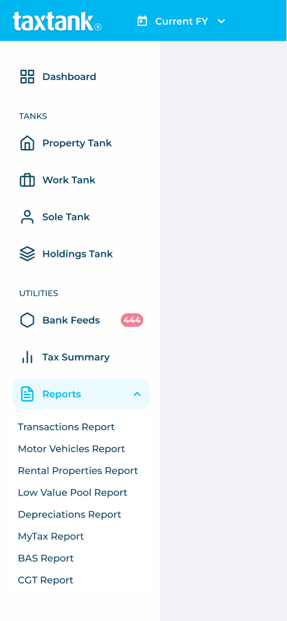
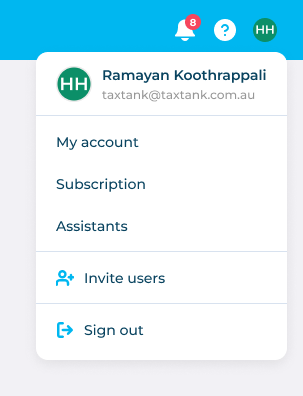
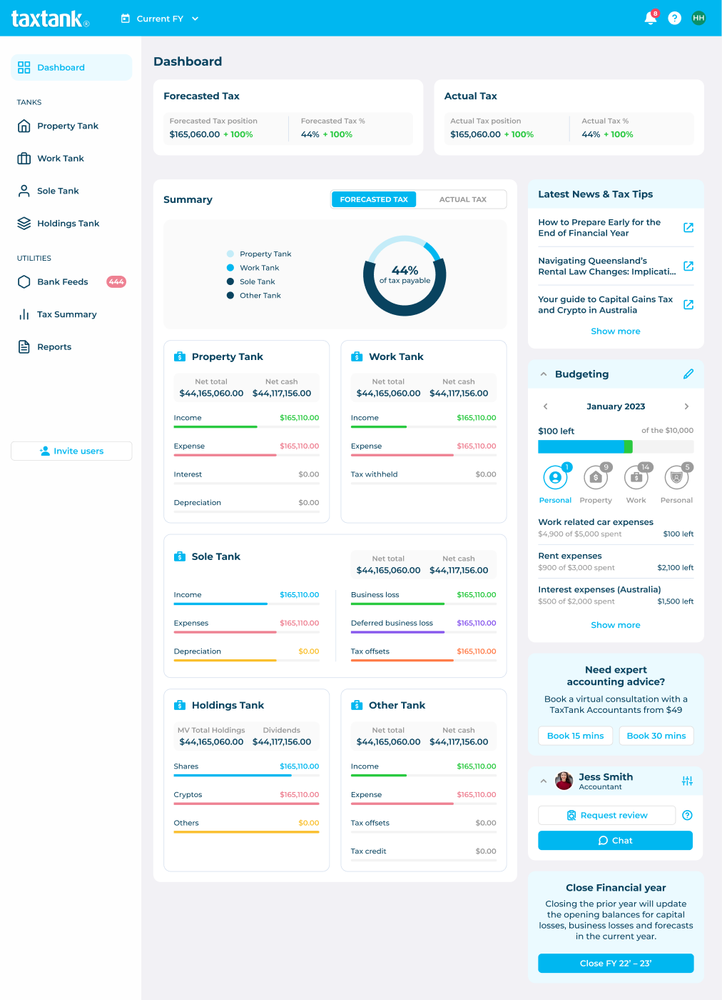
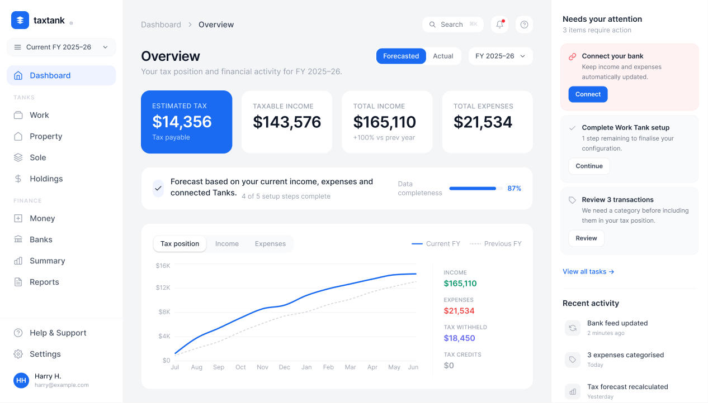

How I turned a tax dashboard into something users can actually understand.
TaxTank had everything a user needed. The problem was the interface didn't help anyone understand what any of it meant, or what to do next.
Before touching the UI, I mapped the full system.
TaxTank is an Australian tax management platform for individuals managing multiple income entities — called Tanks. Each Tank (Property, Work, Sole Trader, Holdings, Other) tracks its own income, expenses and tax position, all feeding into a combined tax forecast.
The product also includes Bank Feeds, a Tax Summary, 8 report types, a budgeting tool, an accountant/advisor relationship layer, and fiscal year management. I listed everything before drawing a single wireframe.
Mapping the Existing Product
Before changing the interface, I reconstructed the platform to understand how features, financial data and supporting tools were connected — and what the structure revealed about the user experience.
The product had grown feature by feature. Users were presented with many destinations and competing information, but the hierarchy did not clearly show what mattered most or what to do next.
income · expenses · interest · depreciation
income · expenses · tax withheld
income · expenses · depreciation · business loss
MV total · dividends · shares · crypto
20+ possible destinations in the sidebar. Users need to understand the product structure before they can decide where to go.
Tax status, tank data, budgeting, news and year-end actions share the same viewport with no clear hierarchy between them.
Primary tax tasks and secondary utilities receive similar visual emphasis. The system does not communicate what to focus on first.
The dashboard contains a lot of information, but gives limited guidance about what the user should actually do next.



Navigation default · Reports expanded (8 sub-items hidden) · Account dropdown
Then I mapped how a user actually moves through it.
The friction points in this journey were not invented. Users who couldn't find something or got stuck wrote emails directly to the tech team. Those emails became the input I used to identify where the product was failing — what couldn't be found, what was confusing, what blocked action.
Email support volume is a blunt but honest signal: if something generates repeated questions, the interface has not done its job.
The product has all the information. The interface doesn't help you understand it.
TaxTank surfaces financial data across multiple entities and time periods. But the interface gives equal visual weight to almost everything — tax numbers, news articles, budgeting tools, CTA widgets and account settings — without guiding the user toward what matters right now.
The result is a product that requires prior knowledge to use. A user who already understands tax will find what they need. A user who is new or returning after weeks will not know where to look.
The tax position is split between "Forecasted Tax" and "Actual Tax" widgets with identical visual weight and no hierarchy. A user cannot immediately answer: am I owing more or less than expected?
Evidence → Header row, dashboard-old.pngLatest News (3 articles), Budgeting (month view + breakdown), Expert Advice CTA, Accountant widget, and Close Financial Year button — all in one column, each with its own heading and CTA.
Evidence → Right column, dashboard-old.pngA locked subscription tank and an active tank with real data sit in the same card grid at the same size. The only signal is a padlock icon. A user with 2 active tanks must process 5 cards equally.
Evidence → Tank grid, dashboard-old-inactive.png8 nav items at the same visual level. Bank Feeds — with 444 unprocessed items — sits in a secondary Utilities section. 8 report types are hidden behind a collapsed toggle with no indication they exist.
Evidence → Sidebar, nav-sidebar.png + nav-reports.png
Four principles shaped every decision that followed.
Surface the signal
Show one clear number first. Everything else is supporting detail. If a user can't answer "what's my tax position?" in 3 seconds, the layout has failed.
Actions before passive information
If something needs doing, it appears before news, tips, or budgeting tools. Information that requires no response comes last.
One system, many Tanks
Every Tank follows the same card pattern. The UI should scale to 2 Tanks or 10 without redesigning anything — just populating an existing system.
Guide, don't overwhelm
Reduce visible choices per viewport. Reveal depth only when users actively navigate into it. The default state should feel calm, not like a cockpit.
Each problem had a specific design answer.
Every decision earned its place.

The redesign is a scalable system, not just one screen.
Each component in the redesign was defined as a reusable pattern. If TaxTank adds a 6th Tank, a new report type, or a new action category, it fits the existing system without redesigning anything.
No post-launch data exists. These are design hypotheses, not proven outcomes.
The most valuable part of this process was refusing to open a design tool until I had mapped the full product. A complex system like TaxTank can look like a UI problem — dense layout, busy sidebar, cluttered right panel — but the actual problem is information architecture. Redesigning individual screens without fixing the hierarchy would have made it look cleaner without making it easier to use.
FinTech dashboards carry a specific design responsibility: users come with anxiety about money. A clear, calm, prioritised interface is not just better UX — it is the product.